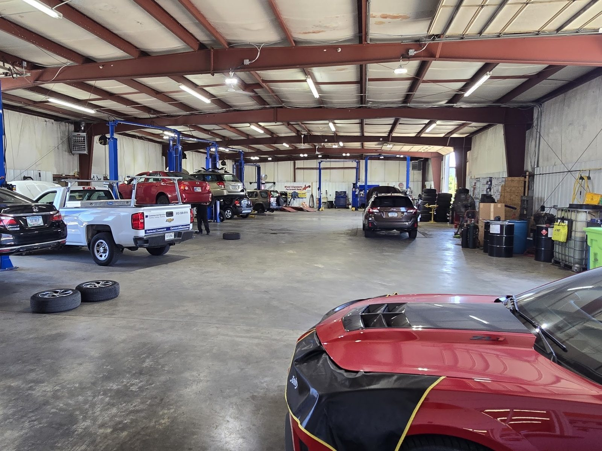

Multi-point inspection
Bloomington, IN
- Checked
- Watch
- Fix now
Auto repair · S Yost Ave, Bloomington
The local mechanic you can trust.
A thorough inspection, a plain-English rundown, and a call before any work starts.

- Shop
- Mason Automotive
- Rating
- 5.0/ 5
- Signed off by
- 369Google reviews
- Call
- (812) 272-7540
- Scheduled maintenance
- Inspections
- Brakes
- Tires
- Oil changes
- Diagnostics
Systems we check
What we fix
Maintenance, brakes, tires, diagnostics and inspections for most makes and models.
- Checked
- Watch
- Fix now
-
Factory scheduled maintenance
Keep up with manufacturer intervals at an independent shop, even while the vehicle is under factory warranty.
- Factory intervals
- Vehicles under warranty
- Oil changes by appointment
-
Complete vehicle inspections
A top-to-bottom look that lists what needs attention now and what can wait.
- Full inspection
- Clear list
- Your call
-
Brake service
Brakes checked and explained in plain English before any work begins.
- Brake inspection
- Brake repair
-
Tires and rotation
New tires when you need them and regular rotation to extend tire life and keep handling safe.
- Tire replacement
- Rotation
-
Diagnostics and AC
Warning light or an electrical issue? We track down the cause and explain it without jargon. AC service too.
- Check engine light
- Electrical issues
- AC service
-
Pre-purchase inspection
We check a used car before you buy, so you know what you are paying for.
- Used car check
- Advice before you buy
What we found, what we fixed
See the part, then the repair
Found Fix now
Fixed Checked
The record
- 5.0Google rating
- 369Google reviews
- Mon–Fri8 AM–5 PM
Signed off
What Bloomington drivers say
5.0 / 5 from 369 Google reviews
Note
Where do I begin!! Paul was absolutely amazing!!! My daughter at college was having an issue with her car, Electrical Safety issue. Looked online for a garage near her, found Mason automotive. 5 stars reviews, they were highly recommended. Mason automotive went above and beyond! I cannot be happier with their service, pricing and professionalism and most importantly their honesty.
Note
I took my van to Mason after receiving a suspicious estimate for work the dealership said was necessary. Everyone I’ve spoken with at Mason has been so kind, professional and realistic with me. They did a very thorough assessment of my vehicle and I was really impressed by the communication afterward.
Note
First of all These guys rock. I got to talk to Rick and Mark. The full inspection they do is top notch. I went in for oil leak and coolant issues. If something is wrong they will find it. Pay Cash or check get discounted rate. Second of all my truck runs better now than when I bought it. Overall hard to find a place as thorough and honest as Mason Automotive.
Note
Before finalizing my purchase of a used car, I told Jared about the top 3 cars on my list. He strongly advised against the 3rd one, and then made room in his schedule to inspect my top pick. The inspection was thorough, timely, and provided the information I needed to close the deal. I highly recommend Jared and his team!
Note
Jared and Mark were fantastic! Being in Chicago, son in Bloomington, they were amazing at helping get my son’s car get fixed and back to him. They followed up, were so kind, and their shop provided amazing service! Highly recommend!

The shop
Started in a home garage
Jarred Mason started in his home garage, treating every car like his own. Word spread, and the shop opened in March 2021.
The first location got too small, so the shop moved to S Yost Ave in December 2022. Explain the work first, then you decide.
- ASE-certified techniciansWork on Ford, Chevrolet, GMC, Toyota, Honda, Subaru and more.
- Now or later, you chooseEach issue broken down, with pictures when needed.
- Straight adviceHonest advice, including what to skip.
Photos
Inside the shop


Find us
Find us on S Yost Ave
2111 S Yost Ave, Bloomington, IN 47403
Open Monday to Friday. Safe, secure after-hours drop-off available.
Hours
- Mon
- 8 AM–5 PM
- Tue
- 8 AM–5 PM
- Wed
- 8 AM–5 PM Holiday hours
- Thu
- 8 AM–5 PM
- Fri
- 8 AM–5 PM
- Sat
- Closed
- Sun
- Closed